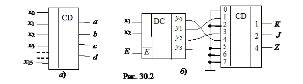

2. ШИФРАТОР

Шифратор (CD) или кодер выполняет функцию, обратную функции дешифратора. Условное
изображение шифратора 16х4 (16 в 4) на
схемах показано на рис. 30.2, а. Классический шифратор имеет n входов и m выходов (m < n), и при подаче сигнала 1 на один из входов (и не более) на
выходе кодера появляется двоичный код номера возбужденного выхода. Число входов
и выходов такого шифратора связано соотношением n = 2m.
Области использования шифраторов - отображение в виде двоичного кода номера нажатой кнопки или положения многопозиционного переключателя, а также номера устройства, подавшего сигнал на обслуживание в микропроцессорных системах. Шифраторы входят в состав микросхем контроллеров прерываний, например КР580ВН59.
Для решения многих конкретных задач необходимо синтезировать преобразователи различных кодов. В качестве примера на рис. 30.2, б представлена схема кодового преобразователя, состоящая из пары декодер DС – кодер CD, реализующая логику работы () некоторого трёхцветного светофора К, J и Z, управляемого двухразрядным двоичным кодом Х. При этом вначале дешифруется каждая комбинация исходного кода, в результате чего на соответствующем выходе декодера появляется логическая 1. Затем этот логический сигнал, значение которого определено номером выхода декодера, подаётся на кодер и на его выходах устанавливается преобразованный код.
Число входов дешифратора DC равно двум (х1 и х2), число выходов - трём (числу выходов преобразователя) у0, у1 и у2. Соединения дешифратора и шифратора выполнены в соответствии с заданной логической функцией у. Часть выходов декодера и входов кодера не используется.
Эффективно стыкуются друг с другом декодер и кодер, построенные на элементах И-НЕ: первый имеет инверсные выходы, а второй - инверсные входы. Если некоторым входным комбинациям соответствует одна и та же выходная, то соответствующие выходы декодера объединяют на элементе ИЛИ и выход последнего подают на нужный вход кодера.
Проектирование кодовой преобразовательной схемы на паре декодер-кодер оказывается в среднем более выгодным и по числу корпусов, и по быстродействию, чем при проектировании из готовых базовых логических микросхем И-НЕ и ИЛИ-НЕ. Однако потребляемая мощность в этом случае может оказаться больше, чем у схемы из отдельных элементов. Затраты времени инженера на логическое проектирование по схеме декодер-кодер неизмеримо меньше, чем затраты на проектирование преобразователя из россыпи.